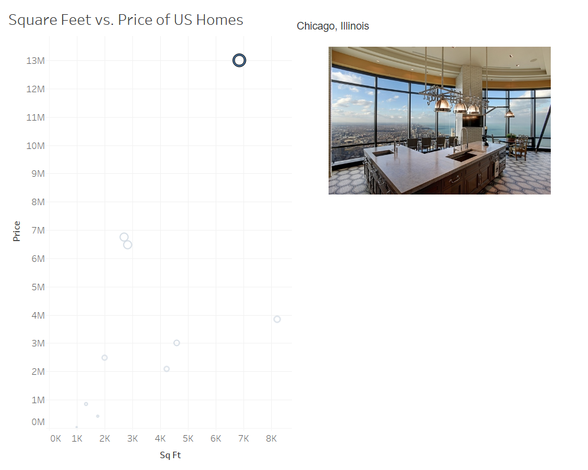

Building a Reactive Image Display Extension
Let’s say you are working in Tableau with data that has media, such as pictures. You find that it would add value to your Dashboard for the relevant photo to automatically appear when a mark is clicked on the dashboard.
This could save you a lot of time and energy. How can we turn Tableau into an interface where we can quickly share photos?
We can use Anvil with the Tableau API extension to build an application which will turn a Tableau dashboard into a reactive image display where depending on which mark you select in your Tableau Dashboard, a relevant photo will appear on the screen.
What are we going to build?
In this tutorial we are going to build and deploy a web application that allows for quick and easy sharing of photos on a Tableau Dashboard.
Here’s an overview of how our finished Reactive Image Display will handle each application:
What are we going to learn?
- Chapter 1: Build your user interface
- Chapter 2: Create your database table
- Chapter 3: Build your Tableau dashboard
- Chapter 4: Using the Tableau Dashboard Extension API
- Chapter 5: Creating the Event Handler
- Chapter 6: Making the Event Handler useful
- Chapter 7: Putting the finishing touches on our chat extension
Let’s get started.